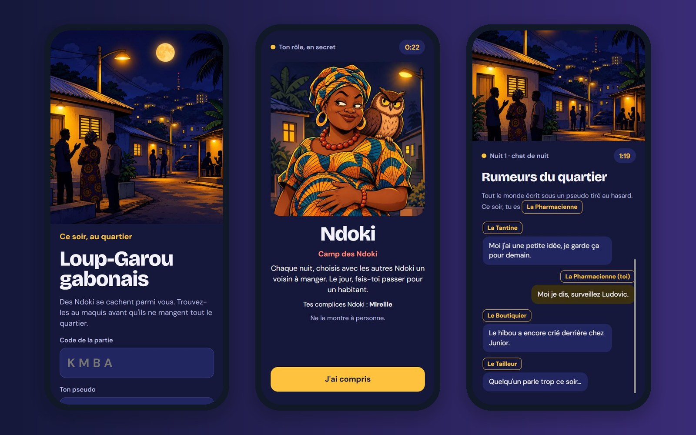
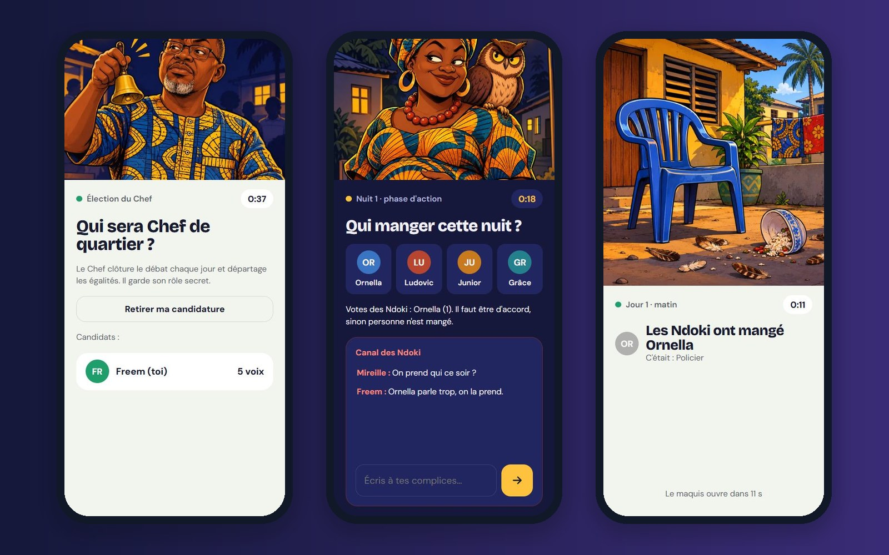
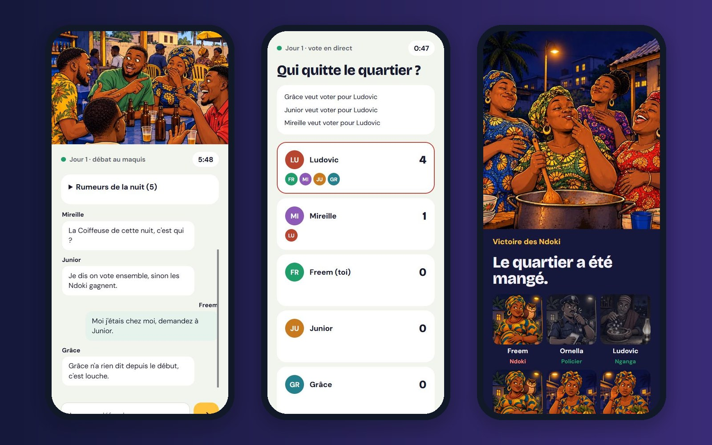
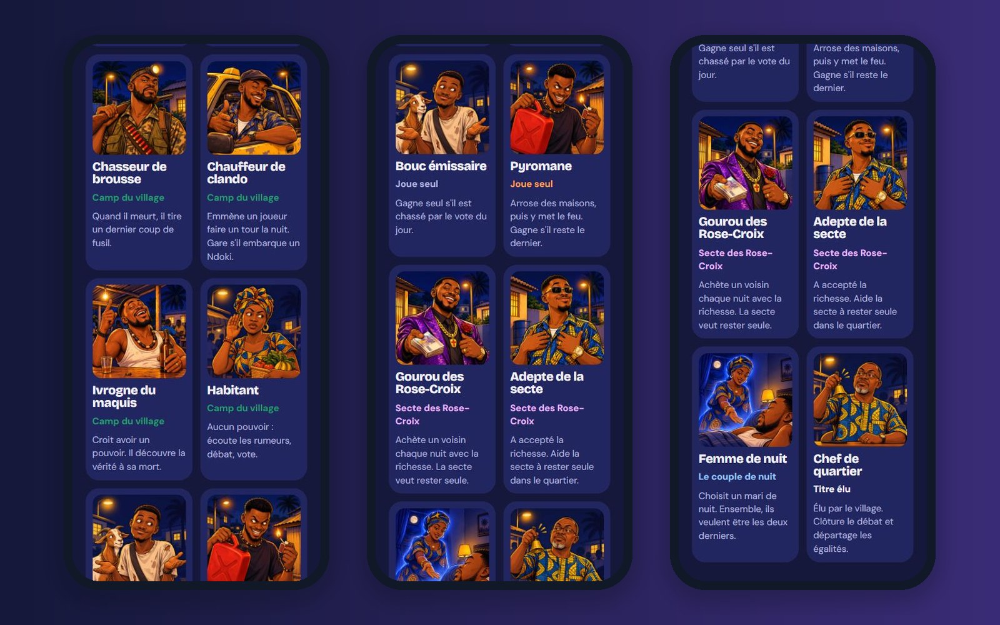

Loup-Garou gabonais
A Werewolf-style deduction game for 4 to 20 friends, set in a Gabonese neighbourhood. Everyone plays from their own phone with a code shared on WhatsApp.




About the project
I made this game for our community so we can play Werewolf together even when everyone is at home, or in another country. The village is a Gabonese neighbourhood: the Ndoki eat a neighbour every night, the Nganga reads the spirits, the Policeman takes someone "to the station" and the debates happen at the maquis. Since the first version I added a Pyromane who burns houses, a secte that converts players with promises of riches, and a Femme de nuit who picks a husband for the night.
I wrote the gameplay document, designed the screens, then built the game. The server keeps every secret: each phone only receives what its player is allowed to see, and the link between the anonymous night names and the real players is only revealed in each player's private summary at the end.
What I built
- Real-time rooms over WebSockets, with a server written from scratch and no dependencies
- Fifteen roles in five camps: the village, the Ndoki, a lone Pyromane, the Rose-Croix secte that buys players with riches, and a night couple
- A neighbourhood chief elected by the players, and a last shot for the Chasseur when he dies
- An anonymous night chat where everyone writes under a random neighbourhood name
- A live vote where every change of mind is shown, with ties settled by the chief
- A private end-of-game summary that disappears when the last player leaves
- Bots that play full games to test every rule automatically